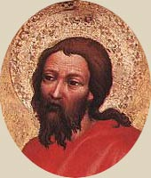
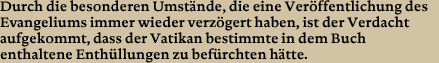
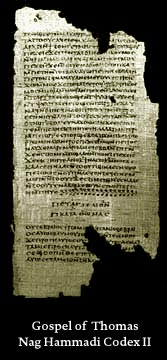
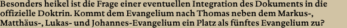

| |
 |
| |
|
|
| |
|
|
| |
|
|
| |
Das
Dokument wurde in Form eines Dialogs zwischen Jesus Christus
und dem Apostel Thomas verfasst. Es besteht aus 114
Logien (logia, griechisch für Spruch), die einen mehr oder
weniger engen Bezug zu den vier Evangelien des neuen Testaments
aufweisen. |
|
| |
|
|
| |
Heute
wird das Manuskript, ebenso wie die übrigen Papyrusbücher aus
der Nag Hammadi-Bibliothek, auf 350 n. Chr. datiert. Fest
steht jedoch, dass es sich dabei um Übersetzungen aus dem Griechischen
handelt. 3 der entdeckten Fragmente konnten ungefähr auf
das Jahr 200 datiert werden. Die griechische Version des
Evangeliums wurde in jedem Fall früher verfasst. |
|
| |
|
|
| |
In Fachkreisen
herrscht weiterhin Uneinigkeit über die Auslegung des Dokuments:
die einen sind überzeugt, bis zu den Ursprüngen Jesu Christi
vorgedrungen zu sein, während die anderen das Evangelium als
Quelle Q des Neuen Testaments betrachten, also als eine
Art Ur-Evangelium, das gemäß der Theorie eines deutschen Wissenschaftlers
aus dem 19. Jh. beim Verfassen der übrigen Evangelien als Grundlage gedient
hätte. |
|
| |
|
|
| |
Auch
wenn das Thomasevangelium zahlreiche Fragen beantwortet hat
und das Manuskript die doktrinale Vielfalt des entstehenden
Christentums unter einem neuen Licht erscheinen lässt, zeigt
das fünfte Evangelium gleichzeitig in aller Deutlichkeit, wie
sehr sich die christliche Tradition im Laufe der Zeit verändert
hat. Immer wieder ging die Rede von einer Sammlung unbekannter
Worte Jesu, die aufgrund ihres sensationellen Inhalts fast
2000 Jahre lang versteckt worden waren. Das Geheimnis, das dieses
Dokument umgibt, konnte bis heute jedoch zumindest teilweise
gelüftet werden. |
|
| |
|
|
| |
Wir wissen,
dass die Nag Hammadi-Bibliothek im 4. Jh. n. Chr. versteckt
wurde, als auf dem 325 in Nicäa einberufenen Konzil das Nicänische
Glaubensbekenntnis proklamiert wird, das Jesus als wesengleich
mit Gott definiert, und die Doktrin offiziell festlegt.
Abweichende Auslegungen gelten fortan als häretisch. Als Reaktion
auf die Gleichschaltung der Religion wurden die Texte natürlich
versteckt, um sie erst wieder hervorzuholen, wenn für den
Leser keine Gefahr mehr bestehen würde. Bestimmt hatte sich
damals niemand vorgestellt, dass sie erst 1600 Jahre später
wieder zu Tage befördert werden sollten! |
|
| |
|
|
|
|
| |
|
|
|
|
|
| |
 |
|
Thomas
ist einer der 12 Apostel Jesu und gleichzeitig
einer der beliebtesten Jünger, wahrscheinlich
aufgrund seines Beinamens "Didymos", der aus dem
Griechischen abgeleitet Zwilling bedeutet.
Nach
alten Überlieferungen war die Wesensgleichheit
zwischen Jesus und Thomas so vollkommen, dass
der Jünger Zugang zu den geheimen Lehren Jesu
hatte.
Der künftige Bekehrer Indiens wollte erst
an die Wiederauferstehung Jesu glauben, als er
seine Hände auf die Wundmale legen durfte. |
|
| |
|
|
|
|
|
|
| |
 |
| |
Die
Öffentlichkeit erhielt erst 1975 Zugang zur gesamten Textsammlung. Das
Thomasevangelium war inzwischen in mehreren Sprachen übersetzt,
veröffentlicht und kommentiert worden, während sich die
Originale in der ägyptischen Abteilung für Altertumskunde
und nicht im Besitz des Vatikans oder einer religiösen
Ordensgemeinschaft befanden, wie das bei den am Toten
Meer gefundenen Schriftrollen der Fall gewesen war.
Das erste Buch mit den Fotographien der Manuskripte wurde
1956, und die erste kritische Studie im Jahr 1959 veröffentlicht.
|
| |
Bis zur Herausgabe einer vorläufigen Version in Frankreich
vergingen 15 Jahre. Die Veröffentlichung die Gesamtausgabe
ließ weitere 15 Jahre auf sich warten. Es geht sogar das
Gerücht, dass das heikle Werk Gegenstand eines Prozesses
zwischen Mitgliedern der Kirche und den Autoren gewesen
sei.
Das Manuskript wäre zunächst zensiert worden, um seine
Veröffentlichung zwei Jahre später schließlich doch noch
zuzulassen. |
| |
|
Wir sollten der Polemik sicherlich Einhalt gebieten. Die
Nag Hammadi-Bibliothek mit seinem Thomasevangelium
ist sowohl für Geschichtswissenschaftler als auch für
Theologen von unschätzbarem Wert, und der Inhalt dieser
Textsammlung stellt die Grundlagen des Christentums unbestreitbar
in Frage. |
| |
Allein
dieser Punkt lässt den Verdacht zu, dass der Vatikan versucht
sein könnte, alle Beweise beiseite zu räumen, die Anlass
zu Zweifeln geben und seine Doktrin ins Wanken bringen
könnten.
Jean Daniel Kaestli, Professor für Theologie an der Universität
in Lausanne und Spezialist für das Thomasevangelium,
bestätigt allerdings, dass sich die Kirche der historischen
Bedeutung abweichender Texte und der Notwendigkeit ihrer
Untersuchung durchaus bewusst ist. |
| |
|
| |
Was sollte die Kirche heute auch zu befürchten haben,
wo ihre Dogmen und ihre institutionelle Struktur seit
dem 2. Jh. einen festen Platz eingenommen haben?
Abweichende Literatur wurde damals in Sicherheit gebracht.
Wenn wir die Texte erst seit 1945 kennen, dann liegt das
bestimmt nicht an einem religiösen Schweigegebot,
sondern vielmehr an den gut gewählten Verstecken, die
mit der Zeit in Vergessenheit geraten sind. Die Existenz
dieser Texte war übrigens noch nie ein Geheimnis. Sie
werden u. a. von Origenes erwähnt, der jedoch nicht
auf ihren eigentlichen Inhalt eingeht, über den somit
bisher nur spekuliert werden konnte. |
|
|
|
|  |
|
|
|
| |
| |
|

|
|
|
|
|
|
|
|
|
|
| |
| Das
rein geschichtliche Gewicht eines solchen Dokuments sollte unbedingt
vom rein theologischen Interesse unterschieden werden. |
| |
|
Die Doktrin basiert in der Tat auf einem Zeugnis. Als die Doktrin
und die offizielle Organisation von den Christen festgeschrieben
wurde, hatte das Konzil von Nicäa bereits beschlossen, das
Thomasevangelium nicht zu berücksichtigen. Offensichtlich gab
es nur wenige Kopien des Dokuments, von denen bisher nur ein
einziges Exemplar gefunden wurde. Es kann also davon ausgegangen
werden, dass das Evangelium aufgrund seines schwer zugänglichen,
ja sogar esoterischen Inhalts nicht sehr weit verbreitet war. |
| |
| Die
Frage ist bis heute Gegenstand heftiger Diskussionen innerhalb
der Wissenschaft, während sie von der Kirche gar nicht erst
erörtert wird. |
| |
| |
|
| |
| |
|